REPARACIÓN DE LA UNIDAD
LOCALIZADOR DE COMPONENTES
Compresor V5
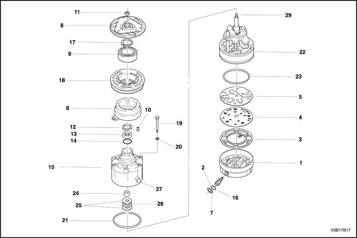


- Culata trasera del compresor
- Aro tórico de la válvula de control
- Junta de la culata trasera
- Placa de válvulas
- Tubito de aspiración
- Bobina de embrague
- Anillo de sujeción
- Embrague del disco impulsor
- Cojinete de polea
- Espiga de alineación del buje de embrague
- Tuerca de eje
- Anillo retén de la junta hermética
- Junta hermética de labio del eje
- Aro tórico del eje
- Carcasa del compresor
- Válvula de control del compresor
- Anillo retén de cojinete de polea a cabezal
- Polea del rotor
- Perno pasante
- Junta pasante
- Aro tórico de carcasa de compresor a cilindro
- Cilindro del conjunto de eje y pasador guía
- Aro tórico de culata trasera
- Arandela de empuje
- Aro de rodamiento
- Cojinete
- Purgador de aceite
- Ranura de alineación del buje de embrague
- Árbol del compresor
INSPECCIÓN DEL COMPRESOR DE AIRE ACONDICIONADO V5
Conjunto de disco de embrague y buje
Herramientas necesarias
J-33013-B Extractor/Instalador del buje y disco impulsor
J-33022 Cubo de tuerca de eje
J-33027 Herramienta de fijación del buje de embrague
J-34992 Dispositivo de fijación del compresor
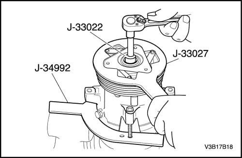
Procedimiento de desmontaje
- Retire el compresor Ver "Compresor" en esta sección.
- Monte el dispositivo de fijación del compresor J-34992 en le compresor y sostenga el dispositivo de fijación del compresor con una morsa de banco.
- Use la herramienta de fijación J-33027 del buje de embrague para evitar que giren el disco impulsor del embrague y el conjunto de buje.
- Quite la tuerca de eje con la llave de cubo para tuerca de eje J-33022.
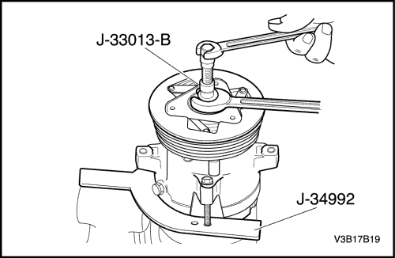
- Enrosque el buje y el extractor de disco impulsor J-33013-B en el buje. Sostenga el cuerpo del extractor con una llave y gire el tornillo central en el cuerpo del extractor para retirar el disco impulsor del embrague y el conjunto de buje.
- Retire la espiga de alineación del buje de embrague. Guarde la espiga para el montaje.
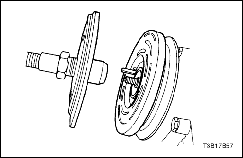
Procedimiento de montaje
- Instale la espiga de alineación del buje de embrague en la ranura del buje. Permita que la espiga sobresalga aproximadamente 3,2 mm (1/8 de pulgada) de la ranura. La ranura del buje tiene una ligera curvatura que crea un ajuste por interferencia entre el pasador y la ranura.
- Compruebe que las superficies de rozamiento del plato de embrague y del rotor de la polea están limpias antes de instalar el disco impulsor del embrague y el conjunto de buje.
Aviso: No empuje o golpee el buje de embrague o el árbol. Se podrían causar averías internas en el compresor.
- Alinee la espiga de alineación del buje con la ranura del árbol. Coloque el disco impulsor del embrague y el conjunto de buje en el árbol de compresor.
- Quite el buje y el perno central del extractor/instalador del disco impulsor J-33013-B, e invierta el sentido del cuerpo en el perno central. Se deben retirar el cuerpo del buje y el extractor/instalador del disco impulsor J-33013-B lo suficiente para permitir enroscar el perno central en el extremo del árbol de compresor.
Aviso: Si se enrosca a fondo el perno central en el extremo del árbol del compresor, o si se sostiene el cuerpo del buje y el extractor/instalador del disco impulsor J-33013-B y se hace girar el perno central, la espiga se clavará y podría quebrar el disco impulsor del embrague y el conjunto de buje.
- Instale el buje y el extractor/instalador del disco impulsor J-33013-B así como el cojinete sobre el disco impulsor del embrague. Enrosque el perno central en el árbol del compresor.
- Sostenga el perno central con una llave. Apriete la parte hexagonal del buje y el extractor/instalador del disco impulsor J-33013-B para presionar el buje sobre el árbol. Ajuste el cuerpo varias vueltas.
- Quite el buje y el extractor/instalador del disco impulsor J-33013-B y compruebe que la espiga de alineación del buje de embrague siga en su lugar en la ranura antes de instalar el disco impulsor del embrague y el conjunto de buje en su posición definitiva. La luz entre las superficies de rozamiento del disco impulsor de embrague y el rotor de la polea de embrague debe estar entre 0,38 y 0,64 mm (0,015 a 0,025 pulg.).
- Quite el buje y el extractor/instalador del disco impulsor J-33013-B. Compruebe que la espiga del buje de embrague esté correctamente colocada. Debe estar al ras o ligeramente por encima del buje de embrague.
- Instale la tuerca del árbol. Sostenga el disco impulsor del embrague y el conjunto de buje con la herramienta de fijación del buje de embrague J-33027. Utilice la llave de cubo J-33022 para la tuerca de árbol y apriete la tuerca contra el reborde del árbol del compresor.
Apretar
Apriete el disco de embrague y la tuerca de fijación del conjunto de buje con un par de 17 N•m (13 lb-ft).
- Haga girar con la mano el rotor de la polea para verificar que la polea no esté rozando el disco impulsor del embrague.
- Retire el compresor de la morsa de banco y retire del compresor el dispositivo de fijación J-34992 del compresor.
- Instale el compresor Ver "Compresor" en esta sección.
Cojinete y rotor de embrague
Herramientas necesarias
J-6083 Alicates para anillo de retención
J-9398-A Extractor de cojinetes
J-9481 Instalador de cojinetes
J-33020 Extractor de polea
J-33023-A Piloto del extractor
J-33019 Juego de herramientas de graneteo de cojinetes
Incluye: J-33019-1 Guía de graneteo de cojinetes
Incluye: J-33019-2 Pasador de graneteo de cojinetes
Incluye: J-33019-1 Guía de graneteo de cojinetes
J-33017 Instalador de rotor de polea y cojinete
J-8433-1 Travesaño de extractor
J-34992 Dispositivo de fijación del compresor
J-8092 Mango de mandril
J-8433-3 Tornillo de fuerza
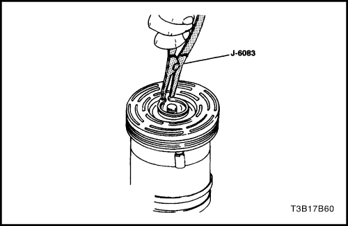
Procedimiento de desmontaje
- Desconecte el cable negativo de la batería.
- Recupere el refrigerante. Consulte "Descargar, agregar aceite, purga y carga del sistema de aire acondicionado" en esta sección.
- Retire el compresor Ver "Compresor" en esta sección.
- Retire el disco impulsor de embrague y el conjunto de buje. Consulte "Disco de embrague y conjunto de buje" en esta sección.
- Retire el rotor de la polea y el anillo de retención del conjunto de cojinete usando los alicates para anillo de retención J-6083.

- Con el compresor montado en el dispositivo de fijación del compresor J-34992, instale el extractor de polea J-33020 en el círculo interior de ranuras del rotor de polea. Gire el extractor de polea J-33020 en sentido horario dentro de las ranuras para enganchar las lengüetas del extractor con los segmentos entre las ranuras del rotor.
- Mantenga en su lugar el extractor de polea J-33020 y apriete el perno de extracción contra el árbol del compresor para retirar el rotor de polea y el conjunto de cojinete.
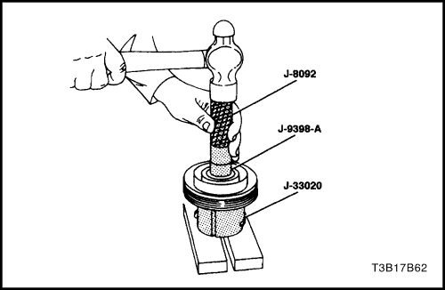
Aviso: Se debe sostener adecuadamente el buje del rotor, a fin de evitar dañar el rotor de la polea durante la extracción del cojinete.
- Retire el perno extractor del extractor de polea J-33020. Con las lengüetas del extractor todavía enganchadas en las ranuras del rotor, invierta el conjunto sobre una superficie plana y sólida o sobre bloques.
Aviso: Aviso: No es necesario retirar la pieza graneteada delante del cojinete para retirar el cojinete. Será necesario eliminar por limado el metal graneteado anterior para obtener la holgura correcta para instalar el nuevo cojinete en el hueco del cojinete; de lo contrario, puede que el cojinete sufra daños.
- Expulse el cojinete del buje de rotor con el extractor de cojinetes J-9398-A y el mango de mandril J-8092.
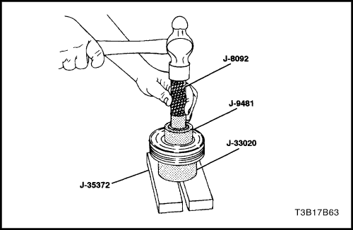
Procedimiento de instalación
Aviso: No sostenga el rotor apoyando el borde de la polea sobre una superficie plana durante la instalación del cojinete, ya que podría resultar dañada la cara del rotor.
- Invierta el rotor de la polea y colóquelo sobre un bloque de apoyo para soportar plenamente el buje del rotor durante la instalación del cojinete.
- Alinee correctamente el nuevo cojinete en el interior de la polea. Utilice el instalador de cojinetes J-9481 y el mango de mandril J-8092, para introducir el cojinete a fondo en el interior de la polea.
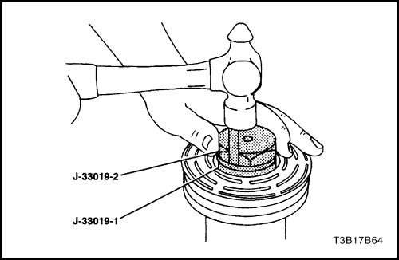
- Coloque la guía de graneteo de cojinetes, J-33019-1, y el pasador de graneteo de cojinetes J-33019-2 en el núcleo del buje de rotor. Desplace el rotor y el conjunto de cojinete sobre el bloque para soportar plenamente el buje debajo del pasador de graneteo. Se puede usar una banda elástica para servicio pesado para sostener el pasador de graneteo en la guía. El pasador debe estar correctamente posicionado en la guía luego de cada impacto sobre el pasador.
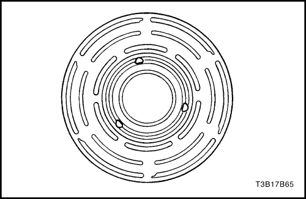
Precaución: Cuide de no lastimarse al golpear el pasador con el martillo.
- Golpee el pasador con un martillo hasta que se forme un graneteado metálico parecido al original casi hasta el cojinete pero sin tocarlo. El graneteado metálico no debe tocar el aro de rodamiento exterior a fin de evitar la posibilidad de deformarlo. Marque tres puntos, espaciados 120 grados entre sí.
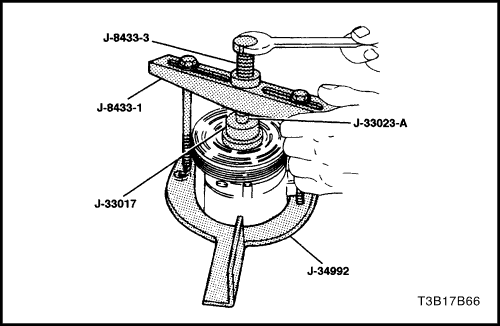
- Con el compresor montado en el dispositivo de fijación J-34992, coloque el rotor y el conjunto de cojinete sobre la carcasa del compresor.
- Coloque el rotor de polea y el instalador de cojinete J-33017 así como el piloto de extractor J-33023-A directamente sobre el aro de rodamiento interior del cojinete.
- Coloque el tornillo de fuerza central J-8433-1 sobre el piloto extractor J-33023-A y monte los dos tornillos pasantes y las arandelas a través de las ranuras en el travesaño del extractor J-8433-1. Rosque los tornillos pasantes en el dispositivo de fijación J-34992. La rosca de los tornillos pasantes debe agarrar todo el espesor del dispositivo.
- Apriete el tornillo de fuerza central J-8433-3 en el travesaño del extractor J-8433-1 para forzar el rotor de la polea y el conjunto de cojinete sobre la carcasa del compresor.
- Instale el rotor y el anillo de retención del conjunto de cojinete usando los alicates para anillo de retención J-6083.
- Vuelva a instalar el disco impulsor de embrague y el conjunto de buje. Consulte "Disco de embrague y conjunto de buje" en esta sección.
- Instale el compresor Ver "Compresor" en esta sección.
- Conecte el cable negativo de la batería.
- Purgue y vuelva a cargar el sistema de aire acondicionado. Consulte "Descargar, agregar aceite, purga y carga del sistema de aire acondicionado" en esta sección.
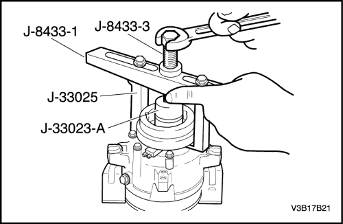
Bobina de embrague
Herramientas necesarias
J-8433-1 Travesaño de extractor
J-8433-3 Tornillo de fuerza
J-33023-A Piloto del extractor
J-33024 Adaptador del instalador de bobina de embrague
J-33025 Patas del extractor de bobina de embrague
J-34992 Dispositivo de fijación del compresor
Procedimiento de extracción
- Desconecte el cable negativo de la batería.
- Recupere el refrigerante. Consulte "Descargar, agregar aceite, purga y carga del sistema de aire acondicionado" en esta sección.
- Retire el compresor Ver "Compresor" en esta sección.
- Retire el disco de embrague y el conjunto de buje. Consulte "Disco de embrague y conjunto de buje" en esta sección.
- Retire el rotor de embrague y el cojinete. Consulte "Rotor de embrague y cojinete" en esta sección.
- Marque la ubicación del terminal de la bobina de embrague sobre la carcasa del compresor.
- Instale el piloto del extractor J-33023-A en la carcasa del compresor. Instale también el travesaño del extractor J-8433-1 con las patas del extractor de bobina de embrague J-33025.
- Apriete el tornillo de fuerza J-8433-3 contra el piloto de extractor J-33023-A para retirar la bobina de embrague.

Procedimiento de instalación
- Coloque el adaptador de instalador de bobina de embrague J-33024 sobre la apertura interna del alojamiento de la bobina de embrague y alinee el adaptador del instalador de la bobina de embrague J-33024 con la carcasa del compresor.
- Coloque el adaptador de instalador de bobina de embrague J-33024 sobre la apertura interna del alojamiento de la bobina de embrague y alinee el adaptador del instalador de la bobina de embrague J-33024 con la carcasa del compresor.
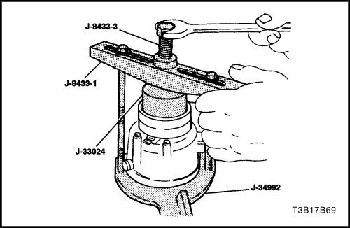
- Centre el travesaño del extractor J-8433-1 en el agujero central avellanado del adaptador del instalador de bobina de embrague J-33024. Instale los tornillos pasantes del dispositivo de fijación del compresor J-34992 y las arandelas en las ranuras del travesaño. Rósquelos en el dispositivo de fijación a lo largo de todo el espesor del dispositivo de fijación.
Importante: Importante: Compruebe que la bobina de embrague y el instalador se mantienen "en línea" durante la instalación.
- Gire el tornillo de fuerza J-8433-3, o utilice una morsa adecuada para forzar la bobina del embrague en la carcasa del compresor.
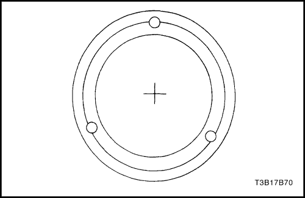
- Cuando la bobina de embrague está plenamente asentada en la carcasa del compresor, utilice un punzón cónico de diámetro 3 mm (1/8 in.) y granetee la carcasa en tres lugares, espaciados 120 grados entre sí, para asegurar que la bobina de embrague se mantenga en su posición. El tamaño del punto de graneteo no debe ser mayor que la mitad de la superficie del punzón cónico, y de una profundidad aproximada de entre 0,28 y 0,35 mm (0,010 a 0,015 in).
- Instale el rotor del embrague y el conjunto de cojinete. Consulte "Rotor de embrague y cojinete" en esta sección.
- Instale el plato de embrague y el conjunto de buje. Consulte "Disco de embrague y conjunto de buje" en esta sección.
- Instale el compresor Ver "Compresor" en esta sección.
- Conecte el cable negativo de la batería.
- Purgue y vuelva a cargar el sistema de aire acondicionado. Consulte "Descargar, agregar aceite, purga y carga del sistema de aire acondicionado" en esta sección.
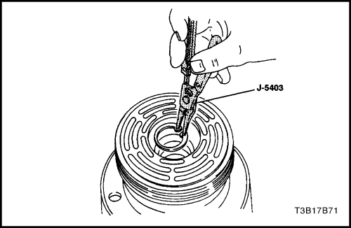
Sustitución de las juntas de árbol
Herramientas necesarias
J-5403 Alicates para anillo de retención
J-9553-1 Extractor de aro tórico
J-23128-A Instalador/Extractor de asiento de junta hermética
J-33011 Instalador de aro tórico
J-34614 Protector de junta hermética del árbol
Importante: No se debe reemplazar una junta hermética de árbol porque se haya encontrado un poco de aceite en la superficie adyacente. El sello está diseño para permitir una pequeña fuga de aceite que sirve para la lubricación. Sólo se debe reemplazar una junta hermética cuando se encuentre una gran cantidad de aceite rociado, y ello sólo después de haber encontrado una fuga real de refrigerante, determinada por medio de un procedimiento de detección de fugas aprobado. Ver "Prueba de fugas del sistema de refrigerante" en esta sección. Procedimiento de extracción
- Desconecte el cable negativo de la batería.
- Recupere el refrigerante. Consulte "Descargar, agregar aceite, purga y carga del sistema de aire acondicionado" en esta sección.
- Afloje y vuelva a colocar el compresor en los soportes de montaje.
- Retire el disco impulsor del embrague y el conjunto de buje del compresor. Consulte "Disco de embrague y conjunto de buje" en esta sección.
- Utilice los alicates para anillo de retención J-5403 para retirar el anillo de retención de la junta hermética.
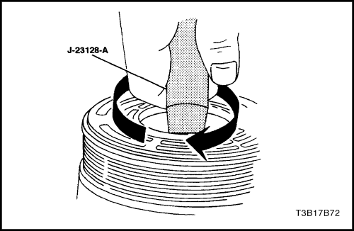
Aviso: Cualquier suciedad o cuerpo extraño que penetre en el compresor puede causar averías.
- Limpie a fondo el interior de la zona de la carcasa del compresor que rodea al árbol, la parte expuesta de la junta hermética, el árbol en sí y la ranura del aro tórico.
- Trabe a fondo las lengüetas moleteadas del instalador/extractor de asiento de junta hermética J-23128-A en la porción hundida de la junta hermética girando el mango en sentido horario. Retire y descarte la junta hermética del compresor tirando y girando de la misma al mismo tiempo. Se debe apretar la manija firmemente a mano. No utilice una llave o pinza para apretar la manija.
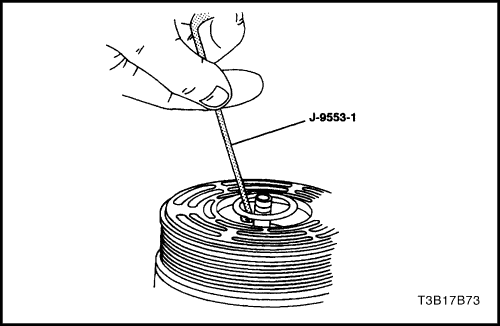
- Retire y descarte el aro tórico del cuello del compresor usando el extractor de aro tórico J-9553-1.
- Limpie a fondo la ranura del aro tórico en la carcasa del compresor.
- Inspeccione el árbol y el interior del cuello de la carcasa del compresor en busca de suciedad y cuerpos extraños. Estas piezas deben estar perfectamente limpias antes de instalar cualquier pieza.
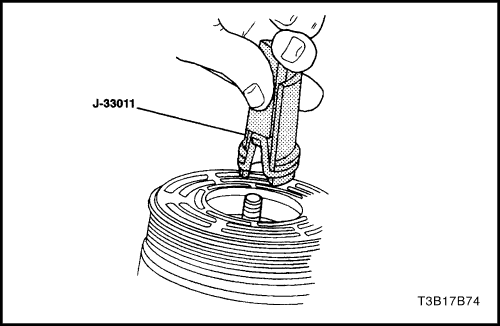
Procedimiento de instalación
Aviso: No se deben volver a usar las juntas herméticas. Utilice siempre un juego de juntas herméticas nuevas para servicio según especificaciones. Verifique que la junta hermética a instalar no esté rayada o averiada de manera alguna. La junta hermética debe estar libre de pelusas y suciedad que puedan dañar la superficie de la junta hermética o impedir un buen sello.
- Sumerja el aro tórico nuevo en aceite refrigerante polialquil glicol (PAG por sus siglas en inglés) y monte el aro tórico en el instalador de aro tórico J-33011.
- Inserte el instalador de aro tórico J-33011 en el cuello del compresor hasta que el instalador "toque fondo". Baje el deslizador del instalador de aro tórico J-33011 de manera de soltar el aro tórico dentro de la ranura inferior para aro tórico. (La ranura superior del cuello del compresor es para el anillo de retención de la junta hermética del árbol.) Gire el instalador para asentar el aro tórico y luego retire el instalador.
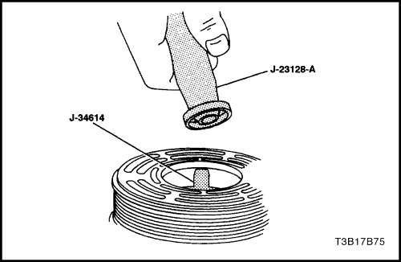
- Fije la junta hermética de labio del eje en el instalador/extractor de junta hermética J-23128-A. Sumerja la junta hermética en aceite PAG limpio.
- Instale el protector de junta hermética de árbol J-34614 en la junta hermética. Colóquelo sobre la junta hermética y empuje la junta hermética a su lugar con un movimiento giratorio.
- Utilice los alicates para anillo de retención J-5403 para instalar el anillo de retención de la junta hermética del árbol con su lado plano contra la junta hermética.
- Quite el exceso de aceite alrededor del árbol y el interior del cuello de la carcasa del compresor.
- Instale el plato de embrague y el conjunto de buje. Consulte "Disco de embrague y conjunto de buje" en esta sección.
- Vuelva a colocar el compresor en su soporte.
- Ajuste la tensión de la correa serpentina de accionamiento auxiliar.
- Conecte el cable negativo de la batería.
- Purgue y vuelva a cargar el sistema de aire acondicionado. Consulte "Descargar, agregar aceite, purga y carga del sistema de aire acondicionado" en esta sección.
- Realice una prueba de fugas del sistema. Ver "Prueba de fugas del sistema de refrigerante" en esta sección.
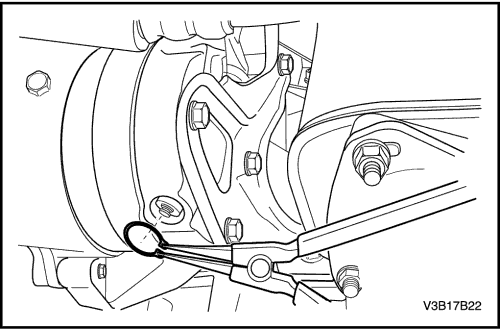
Conjunto de válvulas de control
Herramientas necesarias
J-5403 Alicates para anillo de retención
Procedimiento de extracción
- Recupere el refrigerante. Consulte "Descargar, agregar aceite, purga y carga del sistema de aire acondicionado" en esta sección.
- Retire el anillo de retención de la válvula de control usando los alicates para anillo de retención J--5403.
- Retire el conjunto de válvulas de control.
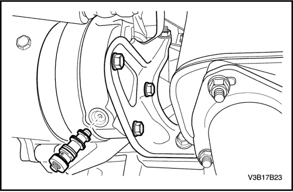
Procedimiento de instalación
- Recubra todos los aros tóricos con aceite polialquil glicol (PAG) limpio.
- Empuje la válvula de control a su lugar apretando con el pulgar.
- Utilice los alicates para anillo de retención J-5403 para instalar el anillo de retención de la válvula. El punto más alto de los lados curvos debe apoyar contra la carcasa de la válvula. Compruebe que el anillo de sujeción esté correctamente asentado en la ranura para dicho anillo.
- Purgue y vuelva a cargar el sistema de aire acondicionado. Consulte "Descargar, agregar aceite, purga y carga del sistema de aire acondicionado" en esta sección.
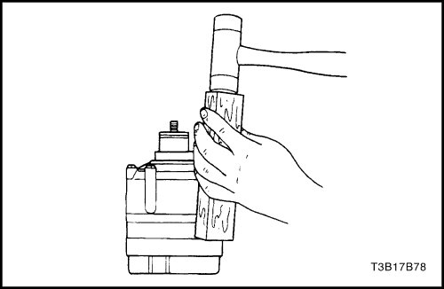
Culata trasera, junta, placa de válvula, placa de láminas, y anillo tórico
Herramientas necesarias
J-34993 Varillas de alineación de cilindro
Procedimiento de extracción
- Recupere el refrigerante. Consulte "Descargar, agregar aceite, purga y carga del sistema de aire acondicionado" en esta sección.
- Purgue el sistema de aire acondicionado. Consulte "Descargar, agregar aceite, purga y carga del sistema de aire acondicionado" en esta sección.
- Retire el compresor Ver "Compresor" en esta sección.
- Vacíe el aceite del compresor en un recipiente adecuado. Mida y registre la cantidad de aceite drenada del compresor. Descarte el aceite usado.
- Retire el disco de embrague y el conjunto de buje. Consulte "Disco de embrague y conjunto de buje" en esta sección.
- Retire el rotor de embrague y el cojinete. Consulte "Rotor de embrague y cojinete" en esta sección.
- Retire la bobina de embrague. Consulte "Bobina de embrague" en esta sección.
- Retirar los tornillos pasantes del compresor. Retirar y desechar las juntas.
- Utilice un bloque de madera y un martillo de cabeza plástica para golpear suavemente el borde de la culata trasera y así liberar la culata del cilindro del compresor. Separar la culata trasera, la junta de la culata, la placa de la válvula trasera, la placa del tubito de aspiración, y los aros tóricos de la culata trasera. Desechar la junta de la culata y el aro tórico.

Procedimiento de instalación
- Coloque la culata trasera sobre una superficie limpia y plana. Coloque la culata con la válvula de control en la posición de las 6.
- Instale las varillas de alineación de cilindro J-34993 en los agujeros de montaje en las posiciones de las 11 y de las 5.
- Instale la junta de culata encima de las varillas de alineación de cilindro J-34993 con el agujero alargado en la espiga superior izquierda (posición de las 11).
- Instale la placa de válvulas de la culata trasera encima de los pasadores guía con el agujero alargado en la espiga superior izquierda. Baje la placa de válvulas de la culata trasera a su lugar.
- Instale la placa de láminas de aspiración encima de las varillas de alineación de cilindro J-34993. Quite la varilla de alineación de la posición de las 5.
- Lubrique el cilindro y el nuevo aro tórico de la culata trasera con aceite refrigerante polialquil glicol (PAG) limpio.
- Instale el aro tórico en la ranura para aro tórico del cilindro. Se puede lubricar la superficie de contacto del aro tórico para facilitar el montaje.
- Con el aro tórico en su lugar en la parte posterior del conjunto de cilindro, ubique el tetón en relieve para los pasadores guía del compresor en la posición de las 6, directamente por encima del orificio en el costado de la culata trasera. Baje cuidadosamente el cilindro y el conjunto de culata trasera sobre el pasador guía hacia la culata trasera.
- Apriete el cilindro y la carcasa del compresor hacia abajo, sobre la culata trasera, usando ambas manos.
- Agregue la nueva junta para el tornillo pasante a los tornillos pasantes, e instale en el conjunto de compresor. Cuatro de los tornillos pasantes deben estar enroscados en la culata trasera antes de retirar la varilla de alineación.
Apretar
Apriete en forma alternada los tornillos pasantes con par de apriete creciente, hasta llegar a 10 N•m (89 lb-in).
- Agregue aceite de refrigeración PAG nuevo, según se explica en el paso 1 del Procedimiento de extracción.
- Coloque la tuerca de árbol sobre el árbol y rote varias veces el árbol de compresor.
- Realice una prueba de fugas del compresor. Consulte "Prueba de fugas (externa)" en esta sección.
- Instale la bobina de embrague. Consulte "Bobina de embrague" en esta sección.
- Instale el rotor del embrague y el cojinete. Consulte "Rotor de embrague y cojinete" en esta sección.
- Instale el plato de embrague y el conjunto de buje. Consulte "Disco de embrague y conjunto de buje" en esta sección.
- Instale el compresor Ver "Compresor" en esta sección.
- Purgue y vuelva a cargar el sistema de aire acondicionado. Consulte "Descargar, agregar aceite, purga y carga del sistema de aire acondicionado" en esta sección.
Cillindro a aro tórico de culata delantera
Herramientas necesarias
J-34993 Varillas de alineación de cilindro
J-35372 Bloque de apoyo
Procedimiento de extracción
- Recupere el refrigerante. Consulte "Descargar, agregar aceite, purga y carga del sistema de aire acondicionado" en esta sección.
- Retire el compresor Ver "Compresor" en esta sección.
- Vacíe el aceite del compresor en un recipiente adecuado. Mida y registre la cantidad de aceite drenada del compresor. Descarte todo el aceite usado.
- Retire el disco de embrague y el conjunto de buje. Consulte "Disco de embrague y conjunto de buje" en esta sección.
- Retire el rotor de embrague y el cojinete. Consulte "Rotor de embrague y cojinete" en esta sección.
- Retire la bobina de embrague. Consulte "Bobina de embrague" en esta sección.
- Retire y descarte las piezas de la junta hermética del árbol. Consulte "Reemplazo de la junta hermética del árbol" en esta sección.
- Retirar los tornillos pasantes del compresor. Retirar y desechar las juntas.
- Utilice un bloque de madera y un martillo de cabeza plástica para golpear suavemente la carcasa del compresor en los puntos de montaje a fin de soltar la carcasa del cilindro del compresor.
Importante: Tome nota de la secuencia de armado de la arandela de empuje y del cojinete, a fin de facilitar el montaje.
- Retire la arandela de empuje y el cojinete.
- Retire y descarte el aro tórico entre la carcasa del compresor y el cilindro.

Procedimiento de instalación
- Apoye la culata trasera sobre el bloque de apoyo J-35372. Coloque la válvula de control en la posición de las 6.
- Instale la varilla de alineación del cilindro J-34993 a través de los agujeros para perno de las posiciones de las 11 y las 5.
- Lubrique el nuevo aro tórico que va entre el cilindro y la carcasa del compresor con aceite polialquil glicol (PAG) limpio.
- Instale el nuevo aro tórico en la ranura para aro tórico del cilindro.
- Instale la arandela de empuje y el cojinete en el mismo orden en que los retiró.
- Alinee el rebaje para la varilla de guía en la carcasa del compresor con la varilla de guía. Empuje hacia abajo con ambas manos la carcasa del compresor para forzarla a pasar por encima del aro tórico del conjunto de cilindro.
- Agregue una nueva junta para el tornillo pasante a los tornillos pasantes, e instale en el conjunto de compresor. Los cuatro tornillos pasantes deben estar enroscados en la culata trasera antes de quitar las varillas guía.
Apretar
Apriete en forma alternada los tornillos pasantes con par de apriete creciente, hasta llegar a 10 N•m (89 lb-in).
- Instale una nueva junta hermética de árbol. Consulte "Reemplazo de la junta hermética del árbol" en esta sección.
- Agregue aceite PAG nuevo, en la misma cantidad drenada en el paso 3.
- Instale la bobina de embrague. Consulte "Bobina de embrague" en esta sección.
- Instale el rotor del embrague y el cojinete. Consulte "Rotor de embrague y cojinete" en esta sección.
- Instale el plato de embrague y el conjunto de buje. Consulte "Disco de embrague y conjunto de buje" en esta sección.
- Realice una prueba de fugas del compresor. Consulte "Prueba de fugas (externa)" en esta sección.
- Instale el compresor Ver "Compresor" en esta sección.
- Purgue y vuelva a cargar el sistema de aire acondicionado. Consulte "Descargar, agregar aceite, purga y carga del sistema de aire acondicionado" en esta sección.
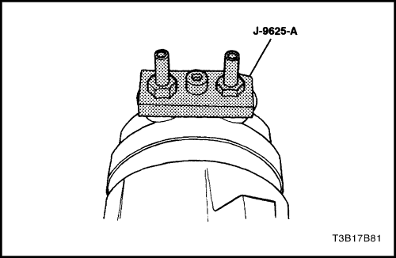
Prueba de fugas (externa)
Herramientas necesarias
J-9625-A Conector de prueba de presión
- Instale el conector de prueba de presión J-9625-A en las lumbreras de aspiración/descarga del compresor.
- Conecte la manguera central del conjunto de colector y manómetro del puesto de carga a un recipiente de refrigerante que esté derecho. Abra la válvula del recipiente.
- Conecte las líneas de alta y baja presión del puesto de carga a los correspondientes herrajes del conector de prueba de presión J-9625-A (o mangueras equipadas con depresores de válvula). La lumbrera de admisión (lado bajo) del compresor tiene una apertura interna de gran tamaño. La lumbrera de descarga (lado alto) tiene una apertura más pequeña hacia el compresor.
- Abra el control de baja presión, el control de alta presión y el control de refrigerante del puesto de carga para permitir que el vapor refrigerante fluya al compresor.
- Utilice un detector de fugas para buscar fugas en la junta hermética de la válvula de sobrepresión de alta, la junta de la carcasa, la junta de la culata trasera, la junta del cilindro central, las juntas de perno pasante y la junta del árbol del compresor. Luego de revisar en búsqueda de fugas, cierre el control de baja presión, el control de alta presión y las líneas de control de refrigerante del puesto de carga.
- Si hay una fuga externa, adopte las medidas correctivas del caso y vuelva a comprobar si hay fugas; así sabrá que ha reparado la fuga.
- Afloje las conexiones de la manguera de manómetro del colector a los adaptadores del manómetro conectados a los lados de baja y de alta. Permite que escape el vapor a presión del compresor. Si se usan mangueras del tipo de depresor de válvula, afloje las conexiones de manguera en el colector de manómetro para dejar que escape el vapor a presión del compresor.
- Desconecte ambas mangueras de manómetro. Retire el conector de prueba de presión J-9625-A.
 | |  | |
| © Copyright Chevrolet Europe. Reservados todos los derechos |